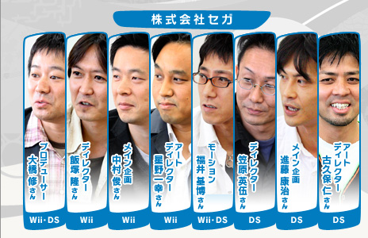
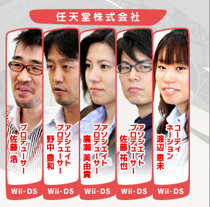
――
オススメの競技などを挙げていただけますでしょうか？ Wii版とDS版のそれぞれご自身のチームが担当されたソフトだけでなく、お互いのチームの良いところや「やられた！」というところも含めてお願いします。
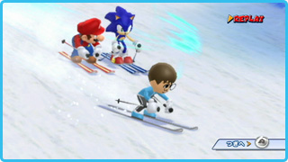
笠原：
まずMiiが使えるのはWii版ならではだと思いますね。スターポイントを貯めるとマリオやソニックの着ぐるみが買えるんですが、これはMiiに着せたいなと。競技では「アルペン」ですね。大きい画面でプレイするので、迫力やスピード感もあるし、操作感覚的にも実際のスキーに近いし、さすがだと思いましたね。で、DS版のオススメはたくさんあるんですけど、ドリーム競技の「スノーボードエクストリーム」ですね。４人同時のレース形式で、トリックを決めてスピードアップだとか、アイテムを使って相手を引きずり落とすとか、多少プレイにうまいヘタがあってもアイテムや障害物の要素でデッドヒートをくり広げられるようになっています。
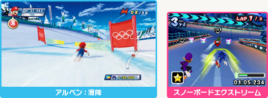
飯塚：
ではWii版を褒めていただきましたのでDS版のオススメから。個人的にDSのゲームはよくやるんですけど、ひとりで長く遊ぶものが好きなので、オススメは「アドベンチャーツアーズ」ですね。ソニックのキャラクター監修もしていますので、ゲーム内容やテキストなどは当然確認しているんですが、実際のプレイは買ってからのお楽しみに残しています。競技では「ボブスレー」の重量感・スピード感は小さい画面なのに確かによく出ていてオススメですね。で、Wii版のオススメをひとつにしぼるのは難しいんですが。４人でプレイできるというコンセプトに非常にマッチしているというところで、「ドリームフィギュアスケート」ですね。画面を分割しないで氷上のミュージカルを楽しむことができまして、小さいお子さんとも一緒にプレイできると思います。
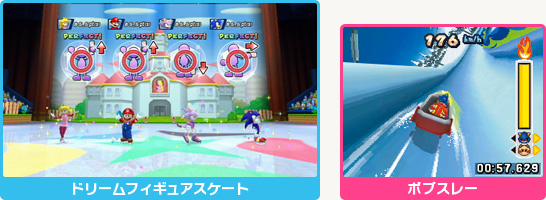
進藤：
Wii版だと「ドリーム雪合戦」ですね。ぱっと見た瞬間これは確かに冬のスポーツの代名詞だし、なんでDS版でも作らなかったんだろうと思いました。DS版の競技はほとんどオススメなんですが（笑）、スキーの「アルペン大回転」が一番ですね。これは開発期間も一番長い競技だったんですが、任天堂さんとも何度もトライ＆エラーをくり返しつつシンプルなタッチペン操作に集約できたと思います。開発の終盤、20人くらいでスタッフゴースト用にタイムトライアルを行っていたのですが、１〜２週間ずっと飽きずにアルペンだけやってました。
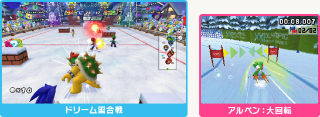
古久保：
実は私もオススメはタイムアタックが非常に熱いDS版のアルペンなんです。
笠原：
かぶるんかい！（一同・笑）。
古久保：
現地で実際に滑って取材して作ったという思い入れもありますし、当然コースを熟知していますので、スタッフの中でも、私のタイムを超える人は誰もいませんでした（笑）。ちなみにレベル３の最も速いスタッフゴーストは私がプレイしたものです。自信を持って収録したゴーストにぜひチャレンジしてみてください。
福井：
私は両方プレイする機会が多かったんですが、DS版では、やっぱりアルペンが……。
笠原：
またかぶるんかい！（一同・笑）。
福井：
モーションのチェックをしている時も一緒にスタッフ同士でタイムアタックをやったりして楽しんでいました。Wii版では「スキージャンプ」にはまりました。簡単な操作ながら成功と失敗のどちらかに如実に反映されるところや、単純に遠くまで飛ぶだけじゃなくバランスをしっかり取ると加点されるみたいな部分も面白かったですね。
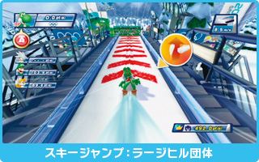
星野：
Wii版の「スキージャンプ」は、短い時間ですぐに結果が出るのでオススメです。短いとは言っても、ちゃんと遊びの大事な部分は集約されていますので。
中村：
Wii版の「アルペン」も、DS版と同じように一番シンプルかつ奥深いと思います。開発中、最速タイムはこのくらいだろうとか思っていたんですが、スタッフ内の記録を見ると、それをはるかに上回るタイムが出ているんですよね。限界はあると思うんですが、これが発売されたあとどこまで伸びるんだろうとWi-Fiランキングが楽しみですね。
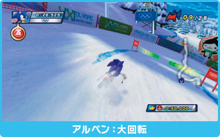
廣瀬：
先ほどから何度も出ていますが、Wii版の「カーリング」が一番好きです。ちょっと前に流行っていた時には興味もなくてルールもまったく知らなかったんですが、やっていく内にこんなに面白い競技なんだと目覚めてしまいました。DS版ではドリーム競技の「カーリングボウリング」ですね。ちょっと毛色が違ってボウリング的な要素が入っているんですが、ピンの代わりのクリボーがちょこまかと動くので狙うのが難しいんですよね。そこに熱中してしまうと、いつの間にか時間が過ぎてしまうという感じです。
渡辺：
DS版の「ボブスレー」です。最初にプレイした時からずっと好きで、好きすぎてやり込みすぎてしまって、もうこのゲームを楽しめないかもというところまで行ったんですが、1週間くらい置いてプレイすると、また少しヘタになっていて。いつも新鮮な気持ちでプレイできます。あと、エミーとワルイージとか普段接点がなさそうな２人を乗せて楽しんだりしています。
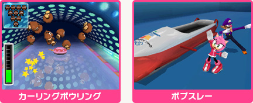
佐藤祐：
Wii版の「スピードスケート」が好きですね。私はどうも音ゲーのセンスが悪いみたいで、最初は苦手だったんです。でもある時から突然神が降りてきたみたいにできるようになりまして。何回か連続でタイミングが合うとドンっと加速するんですけど、それがやみつきになります。DS版では「クロスカントリー」で、この競技はちょっと懐かしい感じの横スクロールのゲームで、スタミナを管理しながらレースをするという形で、ゲーマー心を刺激されます。タイムを出すためにコースを覚えるくらいやりましたね。
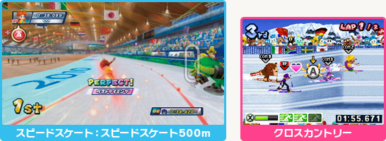
野中：
私も飯塚さんと同じで子供が２人いまして、子供と一緒にプレイするならという意味でオススメなのは、Wii版では「ドリームスノーボードクロス」ですね。爽快感があって演出も派手なので、子供が喜んでプレイする姿が目に浮かびます。ぜひ一緒にやってみたいなと思っている競技です。DS版では「フィギュアスケート」です。これは、対戦相手の踊っている姿が各DSで見えるようになっていて、４人で対戦すると面白くなると思います。
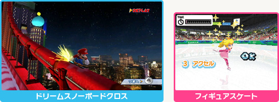
佐藤浩：
他の方とかぶりまくりでDS版の「アルペン」がオススメなんですが、DSでここまでやれるのかというのと、やっぱりタッチペンの操作が非常に気持ちいいんですよ。Wii版では「フィギュアスケート」ですね。ゲームルールが面白いと言うよりは、その後の反応が面白いという、子供の気持ちをわかった良いゲームだと思うんです。それと自分でよくやっていたのは、「ドリームショートトラック」ですね。傾いて滑っていったり、タッチするのが気持ちいいので。
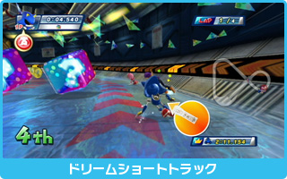
大橋：
プロデューサーの視点から見ると各ディレクターの特徴がよく出たんじゃないかなと思っているのは、Wii版では「ドリームフィギュアスケート」ですね。フィギュアスケートを題材にしてこういう料理の仕方があるんだと感心したという意味で、キャラクターゲームをずっと作ってきていて、子供の気持ちがわかる飯塚じゃないとできない面白いものになっているなと。DS版では「アドベンチャーツアーズ」のモードですね。マリオとソニックとオリンピックを題材にしてストーリーをつけてゲームを作るというのは、やれば面白いというのはわかっているんだけれども、障害も多くて途中でダメになるんじゃないかとか考えちゃうんですが、そこを笠原がやりきってくれました。すでに発売されている海外ではマリオとソニックのはじめての本当の共演だという評価もいただいていて、オススメかなと思います。
渡辺：
アドベンチャーツアーズは、あれだけで１本のゲームですよね。
笠原：
元々こじんまりしたものを作るはずだったんですけど、もっともっととやっている内に気付いたらマップもでっかくなってしまって（一同・笑）。